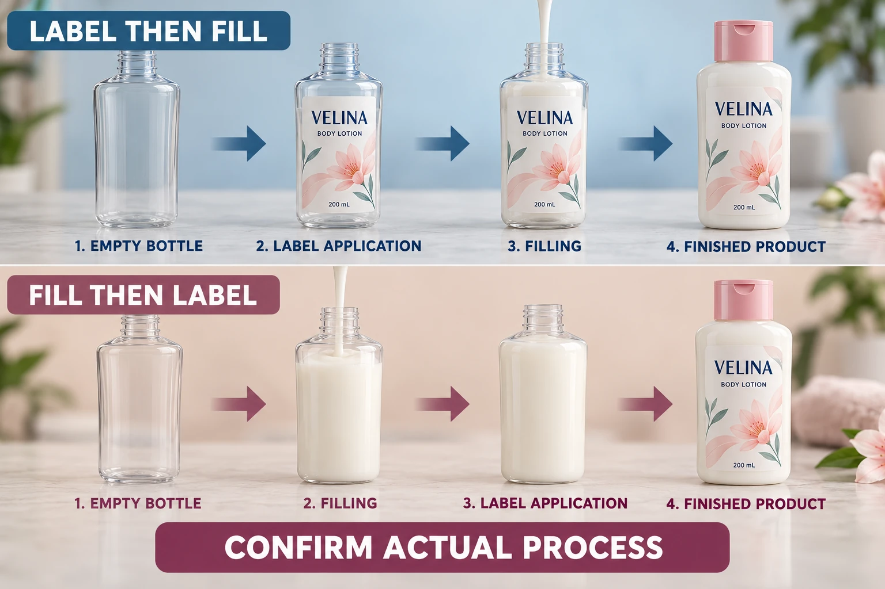

Draw the route the operator will actually use
List the relevant stages from container receipt through packing. Include preparation, filling, closing, any waiting or conditioning, labeling and subsequent handling where they occur. If different sites perform the steps, identify the handoff and the party controlling the material at that point.
Record the state of the container at application: empty or filled, closure arrangement, surface identity and known conditions. Do not assume that the room description establishes the bottle's actual surface condition. Ask the operator what happens to the containers immediately before they reach the label station.
Use the application and service temperature guide for that particular distinction. The process map here determines which stage those conditions belong to and what later operations the labeled pack must encounter.
Review the before-filling route on its own terms
If labels are applied first, identify the later filling and handling stages that can contact or otherwise affect the labeled container. Ask whether the proposed sample evaluation represents those events. An attractive empty labeled bottle does not demonstrate its condition after the full route.
This does not mean early labeling is inherently unsuitable. A supported construction and an agreed process may suit the operation. The relevant question is whether the actual sequence and its assumptions were included in the review.
Ask who checks the container after the later stages and what reference applies. If a concern appears, retain the stage information so reviewers can distinguish the appearance immediately after labeling from the appearance after filling or packing. Do not attribute every later mark to the adhesive without evidence.
Review the after-filling route separately
If labeling follows filling, establish the container condition at that station. Relevant questions can include surface residue, moisture, temperature history and how the filled container is supported. Record actual observations and the operator's approved preparation method.
Do not prescribe a cleaning chemical or a universal wait based on the order of operations alone. The container and label suppliers need to address the specific materials, and the site must confirm that its process can follow the agreed instructions.
The filled pack can provide a relevant background for appearance review, but that benefit does not settle every application question. A correct visual reference and an acceptable preparation route are separate inputs. Keep both connected to the same container and label construction.
Mark the points where conditions change
Use a stage map to locate unresolved assumptions rather than selecting a route from a slogan.
| Stage or handoff | Record | Question to resolve |
|---|---|---|
| Container receipt | Surface and known preparation history | What arrives at the first operation? |
| Filling and closing | Sequence and relevant contact conditions | Does this occur before or after labeling? |
| Application | Pack state, method and supplier instructions | Are these conditions represented in review? |
| Waiting or conditioning | Construction-specific requirement, if any | Can the next operation follow it? |
| Later handling | Contact, movement and packing stages | What must the labeled pack tolerate? |
| Observation | Sample identity and stage of inspection | When did an observed change appear? |
| Release | Approved route, owner and limits | Which sequence is actually accepted? |
Start with the operator's route, then add the supplier's relevant instructions. Mark mismatches and assign them to the responsible party. Arrange a representative evaluation where needed, recording what it covers. Obtain acknowledgement of the final route before treating an earlier sample as permission for a changed sequence.
Keep the decision pending when application conditions are unknown or the next stage conflicts with the supplier's instructions. An arbitrary delay does not establish a validated process. Ask whether the route needs adjustment or a different construction should be evaluated.

Let the actual constraints decide
A hypothetical brand may have an established empty-container labeling operation and a documented downstream route that the chosen construction supports. There is no reason to change it solely because another factory labels after filling.
A second project may need the filled bottle's actual condition represented at labeling, or use equipment arranged around that stage. Its team has a reason to evaluate the later route, including preparation and subsequent packing. The choice follows the operation and evidence, not a universal preference for one order of steps.
Unused-roll storage is another decision. The label storage guide addresses that material before use. Suitable storage cannot stand in for application or post-application evidence.
For cosmetic bottle labels, send the container, artwork, dimensions, quantity per design and a simple process sequence. Mark where the label is applied and which stage remains uncertain. The contact form prepares a message; send process notes and sample records by email or WhatsApp. Ask for a construction proposal tied to the route the operator will actually run.